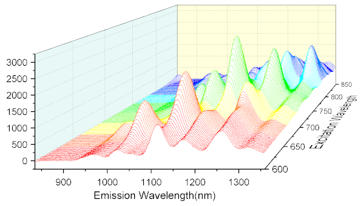
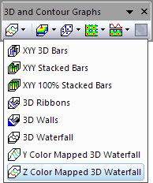

3D-Wasserfall Z: Farbabbildung

Datenanforderungen
Wählen Sie mindestens eine Y-Spalte aus (oder einen Bereich aus mindestens einer Y-Spalte). Idealerweise wählen Sie mindestens zwei Y-Spalten aus (oder einen Bereich aus mindestens zwei Y-Spalten). Wenn es eine verbundene X-Spalte gibt, stellt die X-Spalte die X-Werte bereit; ansonsten wird ein Abtastintervall der Y-Spalte oder Zeilennummer verwendet.
Diagramm erstellen
Wählen Sie die gewünschten Daten aus.
Wählen Sie im Menü .
oder
Klicken Sie auf die Schaltfläche Wasserfall Z: Farbabbildung der Symbolleiste 3D- und Konturdiagramme.

Vorlage
glWater3D.OTP (im Origin-Programmordner installiert)
Notizen
Das 3D-Wasserfalldiagramm mit Z-Farbabbildung ist ein OpenGL-basiertes 3D-Diagramm.
- Die Y-Werte in jeder Spalte definieren eine XY-Ebene mit weißer Füllfarbe.
- Die Farbabbildung wird auf die Linien in Z-Richtung angewendet.
- Alle XY-Ebenen sind in Z-Richtung angeordnet und zwar nach den Werten in einer Spaltenbeschriftungszeile. Wenn eine Spaltenbeschriftungszeile numerische Werte enthält, werden diese automatisch erkannt und zum Beschriften der Z-Achse verwendet. Sollte es keine Zeile mit numerischen Werten geben, können andere Metadaten in Spalten, einschließlich der Spaltenüberschriften, verwendet werden, um die Z-Achse zu beschriften. Die endgültige Steuerung findet über die Auswahlliste Quelle des Z-Werts auf der Registerkarte Allgemeines (Layerebene) im Dialog Details Zeichnung statt.
- Sie können die Datenbeschriftung für 3D-Wasserfalldiagramme aktivieren. Dazu verwenden Sie die Registerkarte Beschriftung von Details Zeichnung.